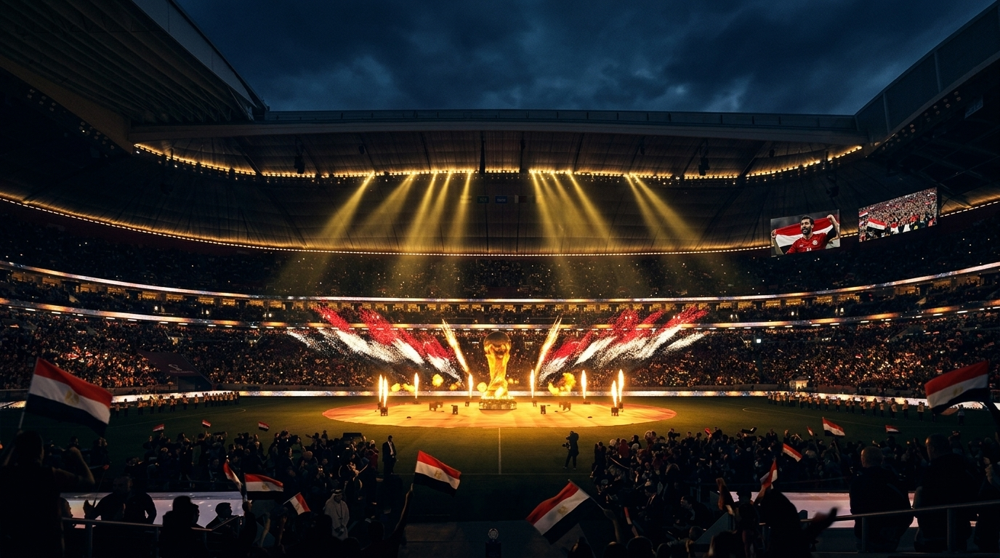

A cinematic football film celebrating Egypt's historic return to the World Cup and its journey to the Round of 16.
Project Goal
The goal of this project was to capture Egypt reaching the Round of 16 for the first time in its history, following the country's return to the World Cup after 36 years. I wanted to turn that moment into a short emotional story that could be released while the event was still fresh and relevant.
الفكرة من الفيديو كانت إني أستغل تأهل مصر لدور الـ16 لأول مرة في تاريخها، بعد رجوعها للمشاركة في كأس العالم لأول مرة من 36 سنة. حبيت أحول اللحظة دي لفيديو قصير يحكي رحلة المنتخب والإحساس اللي كان حوالين التأهل، ويكون مناسب للنشر في نفس وقت الحدث.
Strategy
I handled the project from concept and research to scriptwriting, editing, and sound design. I used AI to assist with the script and voice-over, then researched and selected the footage and built the final story around pacing, emotion, and sound.
اشتغلت على المشروع بالكامل من الفكرة والبحث وكتابة السكريبت لحد المونتاج وتصميم الصوت. استخدمت الـ AI في كتابة السكريبت وعمل الـ Voice Over، وبعدها جمعت اللقطات المناسبة وبنيت منها القصة والإيقاع والمشاعر اللي كنت عايز أوصلها.
Problem Solving
The biggest challenge was the deadline. The video had to be finished and published the very next day while the event was still fresh. I spent around 18 hours working continuously to make sure the final video was ready in time without compromising the quality.
أكبر تحدي كان الوقت، لأن الفيديو كان لازم يخلص ويتنشر تاني يوم مباشرة بعد الخروج، فكان لازم أشتغل بسرعة جدًا من غير ما أضحي بجودة النتيجة. فضلت حوالي 18 ساعة متواصل على الجهاز علشان الفيديو يطلع في وقته ويقدر يعيش اللحظة مع الجمهور.
Workflow
Turn a historic football moment into an emotional short film.
Collected and selected footage that could tell Egypt's story and match the narrative.
Developed the script with the help of Generative AI.
Created the voice-over using AI.
Built the story through pacing, emotional transitions, and cinematic editing.
Designed the sound and music to strengthen the emotional impact.
Tools
Final Result